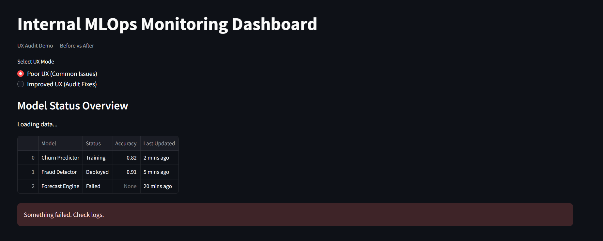
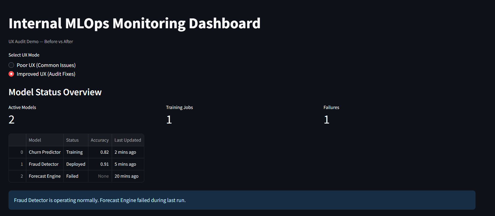

Performance-Driven UX Audits for Internal & AI Tools
We help engineering teams reduce friction, confusion, and perceived slowness — without backend rewrites or risky redesigns.
Request an AuditSelected Work
Internal MLOps Monitoring Dashboard UX Audit




- Improved clarity of system states and failures
- Reduced monitoring friction for ML engineers
- UX-only changes improved perceived performance
Admin Panel UX Review for Data Infrastructure Platform
- Reduced operator confusion during async jobs
- Improved error visibility and recovery paths
- No UI redesign required
AI Prompt Flow & Response UX Review
- Improved user trust in AI responses
- Clearer retry and fallback feedback
- Model-agnostic UX fixes